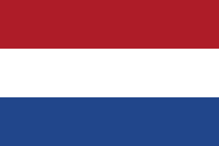
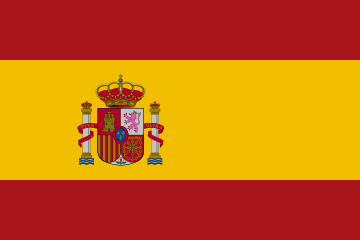

Country profiles
Opportunities in 10 EU countries
For Indian ICT professionals, students and researchers: demand, work and study routes, and official sources, country by country.
- Austria5.4% ICT specialists as share of employment (2025)ICT specialists made up 5.4% of employment in Austria in 2025 and 82% of recruiting enterprises cited too few ICT applications, but hiring has cooled from earlier peaks and is selective.Open profile →
- Estonia6.8% ICT specialists as share of employment (2025)ICT specialists were 6.8% of employment in Estonia in 2025; ICT is structurally important, but current hiring is selective and concentrated on experienced specialists.Open profile →
- Finland7.8% ICT specialists as share of employment (2025)Finland is highly ICT-intensive, with about 202,300 ICT specialists (7.8% of employment) in 2025, but the general labour market is currently soft and recruitment favours experienced specialists.Open profile →
- France1.43m ICT specialists employed across the economy (2025)France is a very large ICT market, with 1.43 million ICT specialists in 2025 and a digital market forecast to grow 3% in 2026, although hiring is more selective than in the earlier expansion cycle.Open profile →
- Germany2.3m ICT specialists in employment (2025)Germany employed 2.3 million ICT specialists in 2025 (5.5% of employment), about 31,000 of them Indian, and shows strong structural demand for advanced digital skills.Open profile →
- Italy3.8% ICT specialists as share of employment (2025)ICT specialists were 3.8% of employment in Italy in 2025; demand is moderate to high for selected specialist roles, with 83% of systems-administrator entries difficult to fill.Open profile →
- Latvia4.5% ICT specialists as share of employment (2025)Latvia is a compact ICT market (4.5% of employment in 2025, 7,355 ICT enterprises) that offers selective opportunities for experienced specialists rather than a blanket shortage.Open profile →
- Lithuania≈77,600 ICT specialists in employment (2025)Lithuania had about 77,600 ICT specialists in 2025 (6.7% of employment), with strong demand for selected mid-level and senior profiles in a small, selective ecosystem.Open profile →

The Netherlands7.2% ICT specialists as share of employment (2025)The Netherlands is a large, ICT-intensive labour market: ICT specialists were 7.2% of employment in 2025 and about 560,000 people worked in ICT occupations.Open profile →
Spain>1.0m ICT specialists in employment (2025)Spain had more than 1 million ICT specialists in 2025 (4.8% of employment) and strong demand for selected digital profiles in its major hubs, although it is not a blanket shortage market.Open profile →